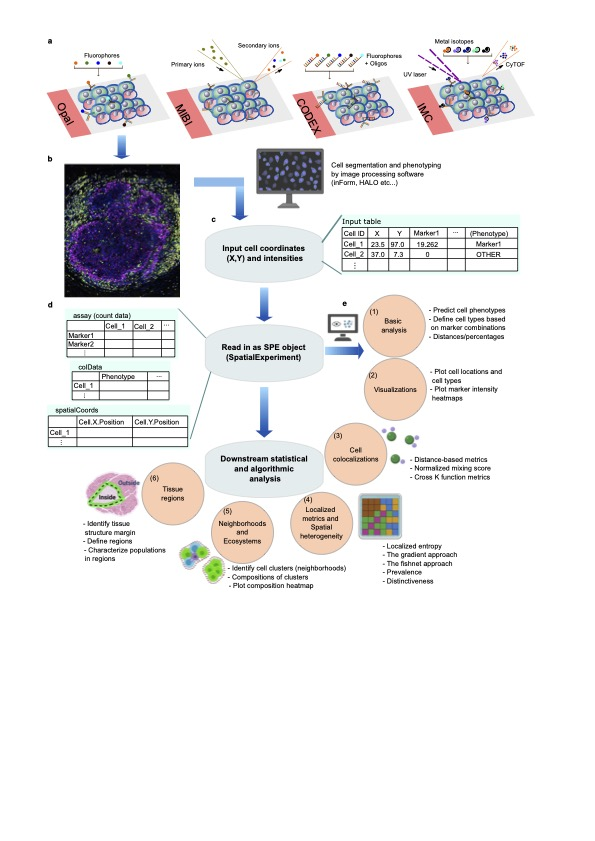

vignettes/SPIAT.Rmd
SPIAT.RmdSPIAT (Spatial Image Analysis of Tissues) is an R package with a suite of data processing, quality control, visualisation and data analysis tools. SPIAT is compatible with data generated from single-cell spatial proteomics platforms (e.g. OPAL, CODEX, MIBI, cellprofiler). SPIAT reads spatial data in the form of X and Y coordinates of cells, marker intensities and cell phenotypes.
SPIAT includes six analysis modules that allow visualisation, calculation of cell colocalisation, categorisation of the immune microenvironment relative to tumour areas, analysis of cellular neighborhoods, and the quantification of spatial heterogeneity, providing a comprehensive toolkit for spatial data analysis.
An overview of the functions available is shown in the figure below.

SPIAT
SPIAT is a
R package available via the Bioconductor repository for
packages.
if (!requireNamespace("BiocManager", quietly = TRUE)) {
install.packages("BiocManager")}
BiocManager::install("SPIAT")You can also install the latest development version from Github.
if (!requireNamespace("devtools", quietly = TRUE)) {
install.packages("devtools")}
devtools::install_github("TrigosTeam/SPIAT")SPIAT
We hope that SPIAT will be useful for your research. Please use the following information to cite the package and the overall approach. Thank you!
## Citation info
citation("SPIAT")
#> To cite package 'SPIAT' in publications use:
#>
#> Trigos A, Feng Y, Yang T, Li M, Zhu J, Ozcoban V, Doyle M (2024).
#> _SPIAT: Spatial Image Analysis of Cells in Tissues_. R package
#> version 1.6.3, <https://trigosteam.github.io/SPIAT/>.
#>
#> Feng Y, Yang T, Zhu J, Li M, Doyle M, Ozcoban V, Bass G, Pizzolla A,
#> Cain L, Weng S, Pasam A, Kocovski N, Huang Y, Keam S, Speed T, Neeson
#> P, Pearson R, Sandhu S, Goode D, Trigos A (2023). "Spatial analysis
#> with SPIAT and spaSim to characterize and simulate tissue
#> microenvironments." _Nature Communications_, *14*(2697).
#> doi:10.1038/s41467-023-37822-0
#> <https://doi.org/10.1038/s41467-023-37822-0>.
#>
#> To see these entries in BibTeX format, use 'print(<citation>,
#> bibtex=TRUE)', 'toBibtex(.)', or set
#> 'options(citation.bibtex.max=999)'.